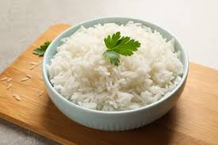

Arroz Blanco

Plato tipico Latino
Este es un plato que se cocina practicamente todos los dias en PR.
De igual manera se puede ver en casi todas las comidas latinas con alguna mestura.
Ingredients
- white rice-1 cup
- water-2 cups
- salt-1 tbsp
- Oil-1 tbsp
Steps
- Wash the rice with abundant water.
- Add the rice to the coocker and add the water.
- Add the other ingredients and push down the button.
- Wait till the coocker is done.
Home